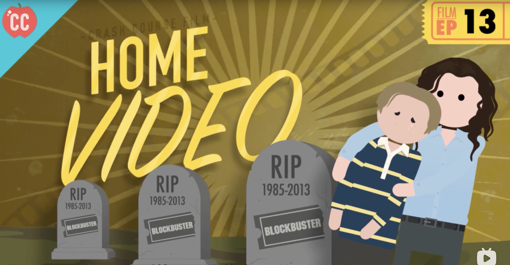

HERE COMES CRASH COURSE FILM ! Do you want to know more about movies? For the next year,that’s what we’re going to be talking about on Crash Course Film. We’ll look at the complex,inspiring,and sometimes upsetting story of how movies came to be,and how they evolved into what we now see at the Megaplex,on Netflix,or on DVDs from Redbox. Because movies haven’t always looked like they do now.There was a real long process to figure out what they...were. Were they spectacles ? Documentaries ? Short Films ? If so,how short ? Long films ? If so,how long ? Is black and white better than color ? Should sound be the industry standard ? And where should we make them ? Because at first, Hollywood was not the epicenter of film making. So many question that we’ll do best to answer. See,nobody really planned on movies.They were an accident,and most of the people that developed the original technologies,even they didn’t think movies had a future. Studying film is really studying people,psychology,society,and technology. What do we want ? What do we fear and Why ? What inspires us ? Like many art forms,film gives us a window into these things. We hope you’ll join us for the next few months as we dive deep into the history of movies here on Crash Course Film.

Movies are Magic - [Crash Course Film #1]

The First Movie Camera - [Crash Course Film #2]

The Lumiere Brothers - [Crash Course Film #3]

Georges Meliesn - [Crash Course Film #4]

The Language of Film - [Crash Course Film #5]

The Birth of the Feature Film- [Crash Course Film #6]

German Expressionism - [Crash Course Film #7]

Soviet Montage - [Crash Course Film #8]

The Silent Era - [Crash Course Film #9]

Breaking the Silence - [Crash Course Film #10]

The Golden Age of Hollywood- [Crash Course Film #11]

Independent Cinema - [Crash Course Film #12]

Home Video - [Crash Course Film #13]

World Cinema - Part 1 - [Crash Course Film #14]

World Cinema - Part 2- [Crash Course Film #15]